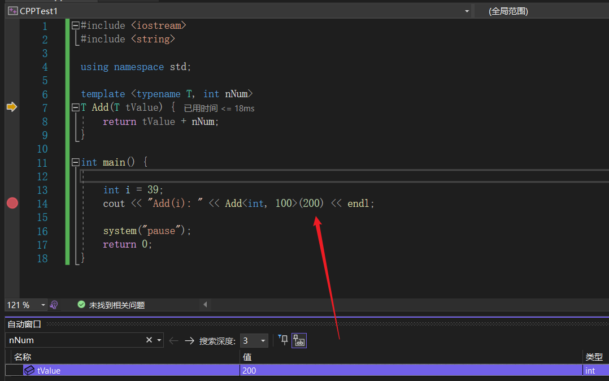

模板是泛型编程的基础，泛型编程即以一种独立于任何特定类型的方式编写代码。
模板是创建泛型类或函数的蓝图或公式。库容器，比如迭代器和算法，都是泛型编程的例子，它们都使用了模板的概念。
每个容器都有一个单一的定义，比如 向量，我们可以定义许多不同类型的向量，比如 vector <int> 或 vector <string>。
您可以使用模板来定义函数和类。
函数模板
定义
- 存在与函数模板的同名函数，访问的时候需要加作用域
T 被替换成 int、double、string 等等，但是类型要一致，如返回值和参数
对实参进行强制类型转换
Add(10, static_cast<int>255.5);显式指定参数类型
Add<double>(10, 255.5);- 函数模板重载，重载后需要选一个参数的类型作为返回值
template <typename type> ret-type func-name(parameter list)
{
// 函数的主体
// type 是函数所使用的数据类型的占位符名称。这个名称可以在函数定义中使用。
}
#include <iostream>
#include <string>
using namespace std;
template <typename T>
T Add(T const& a, T const& b) { // 可以接收很多類型，如 int、double、string 等
return a + b;
}
// 函数模板重载
template <typename T1, typename T2>
T2 Add(T1 const& a, T2 const& b) {
return a + b;
}
int main() {
int i = 39;
int j = 20;
cout << "Add(i, j): " << Add(i, j) << endl;
double f1 = 13.5;
double f2 = 20.7;
cout << "Add(f1, f2): " << Add(f1, f2) << endl;
string s1 = "Hello";
string s2 = "World";
cout << "Add(s1, s2): " << Add(s1, s2) << endl;
cout << "Add(i, f1): " << Add(i, f1) << endl;
system("pause");
return 0;
}
非类型函数模板参数
- 非类型模板参看，顾名思义，模板参数不限定于类型，普通的数值（ Nontype Template Parameters）也可作为模板参数。
- 非类型模板参数可以是：参数列表，类型，普通类型【除了浮点型和类对象】。
- 它可以是常整数（包括enum枚举类型）或者指向外部链接对象的指针。
-
A.cpp 中如何引用B.cpp 中的全局变量，在A.hpp 中使用extern 关键字对外部变量加以引用。
#include <iostream>
#include <string>
using namespace std;
// 或者直接指定默认值
//template <typename T, int nNum = 110>
//Add(200)
template <typename T, int nNum>
T Add(T tValue) {
return tValue + nNum;
}
int main() {
int i = 39;
cout << "Add(i): " << Add<int, 100>(200) << endl;
// 指定 T 的类型
system("pause");
return 0;
}
template<double VAL> // ERROR： 浮点数不可作为非类型模板参数
double process(double v) {
return v * VAL;
}
template<std::string name> // ERROR：类对象不能作为非类型模板参数
class MyClass {
}
改成指针可以通过编译
template<double* PVAL>
double process(const double& x) {
return x * (*PVAL);
}
template<const char* name>
class MyClass {
...
}
// 使用
double val = 10;
double res = process<&val>(20); // ERROR: 表达式必须含有常量值
MyClass<"hello"> x; // ERROR: 模板参数不能引用非外部实体
const char* s = "hello";
MyClass<s> x; // ERROR: 表达式必须含有常量值

有一个问题，怎么查看 nNum 的值？
- nNum 被定义为编译时确定的表达式常量，不能在运行时进行查看。
- 非类型模板参数在编译期间就已经实例化，所以其模板实参必须是常量表达式。
类模板（泛型）
定义
- 泛型编程 -- 主要解决代码复用问题
- 根据类型进行实例化
template <class type> class class-name {
// type 是占位符类型名称，可以在类被实例化的时候进行指定。您可以使用一个逗号分隔的列表来定义多个泛型数据类型。
}
//e.g
template <typename T>
class CA {
public:
void test(T tValue);
}
如定义一个 Stack 类
#include <iostream>
#include <vector>
#include <cstdlib>
#include <string>
#include <stdexcept>
using namespace std;
template <class T>
class Stack {
private:
vector<T> elems; // 元素
public:
void push(T const&); // 入栈
void pop(); // 出栈
T top() const; // 返回栈顶元素
bool empty() const{ // 如果为空则返回真。
return elems.empty();
}
};
template <class T>
void Stack<T>::push (T const& elem) {
// 追加传入元素的副本
elems.push_back(elem);
}
template <class T>
void Stack<T>::pop () {
if (elems.empty()) {
throw out_of_range("Stack<>::pop(): empty stack");
}
// 删除最后一个元素
elems.pop_back();
}
template <class T>
T Stack<T>::top () const {
if (elems.empty()) {
throw out_of_range("Stack<>::top(): empty stack");
}
// 返回最后一个元素的副本
return elems.back();
}
int main() {
try {
Stack<int> intStack; // int 类型的栈
Stack<string> stringStack; // string 类型的栈
// 操作 int 类型的栈
intStack.push(7);
cout << intStack.top() <<endl;
// 操作 string 类型的栈
stringStack.push("hello");
cout << stringStack.top() << std::endl;
stringStack.pop();
stringStack.pop();
}
catch (exception const& ex) {
cerr << "Exception: " << ex.what() <<endl;
return -1;
}
}
模板全特化
// 全特化 e.g
template <>
class CA<std::string> {
public:
void test(std::string tValue);
}
模板偏（局部）特化
#include <iostream>
#include <string>
using namespace std;
// 主模板
template <typename T1, typename T2>
class CA {
};
template <typename T>
class CA<T, T> {
public:
int nNumA;
int nNumB;
CA(T a, T b):nNumA(a), nNumB(b) {
cout << "模板偏特化" << endl;
}
};
int main() {
CA<int, int> obj(14, 14);
system("pause");
return 0;
}
前人栽树
- C++ 模板 | 菜鸟教程 (runoob.com)
- C++基础——非类型模板参数_五道口纳什的博客-CSDN博客
- C++模板进阶操作 —— 非类型模板参数、模板的特化以及模板的分离编译2021dragon的博客-CSDN博客非类型模板